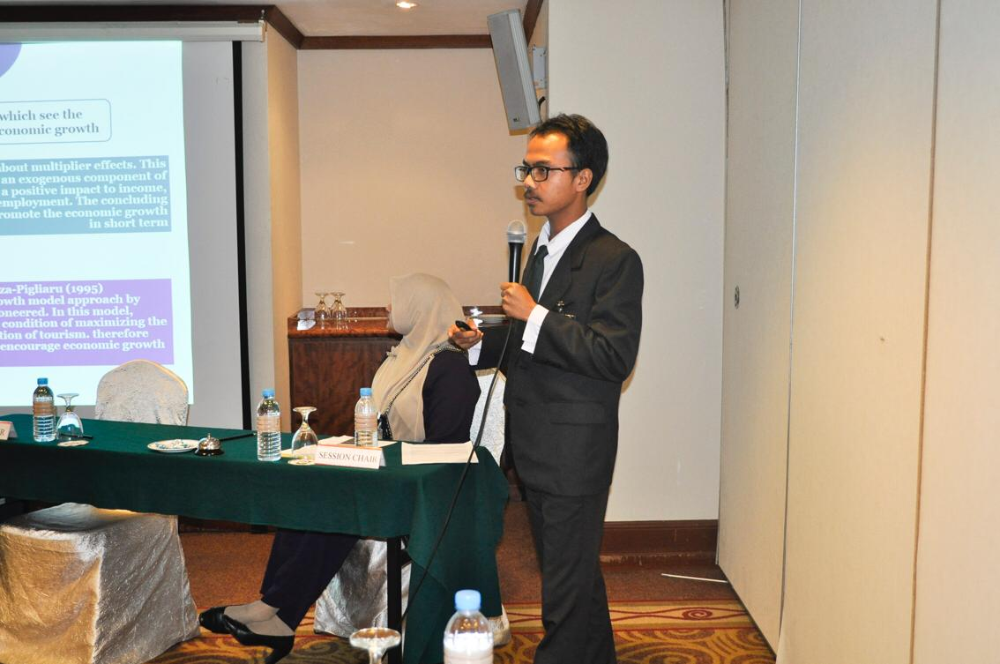
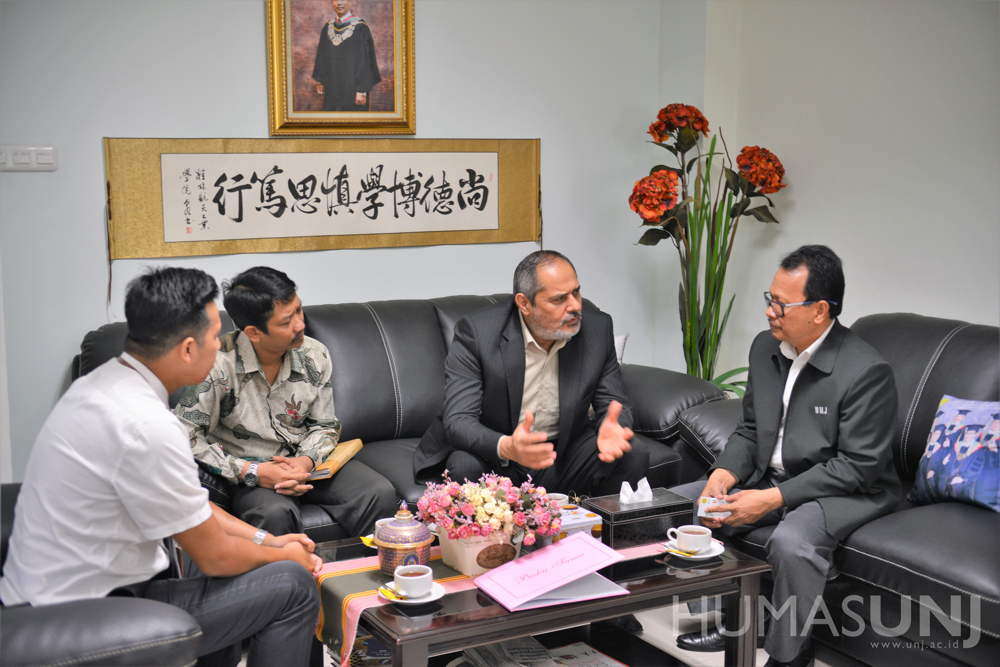

BERITA
 Skripsi Mahasiswa FE UNJ Tembus Jurnal Internasional Terindeks Scopus Q3 November 1, 2018Menghasilkan sebuah karya ilmiah telah menjadi kewajiban bagi mahasiswa sebelum lulus dan dinyatakan sebagai Sarjana; dengan demikian menulis skripsi menjadi sebuah keharusan. Namun, sesungguhnya, mahasiswa ...

UNJ Menerima Kunjungan Delegasi Iran
Oktober 29, 2018